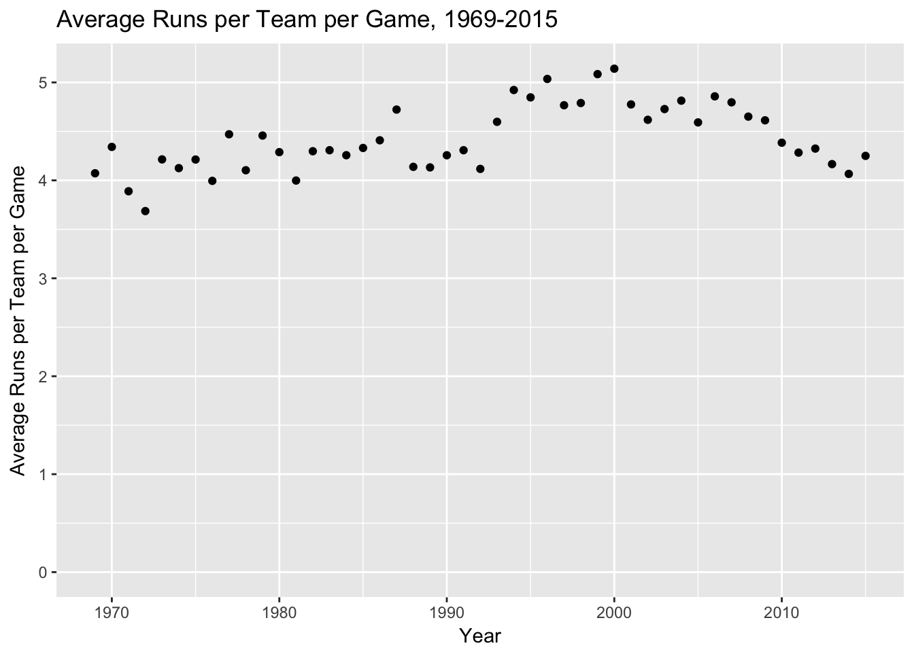
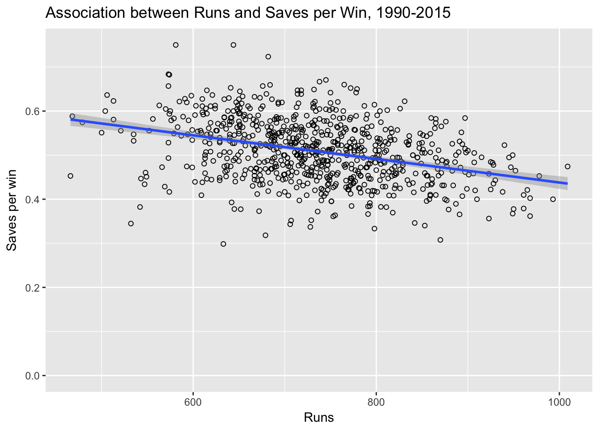

From listening to my favorite fantasy baseball podcast it seems that there is a belief that teams that score lots of runs are not likely to produce saves. The idea seems to be that such teams would blow out their competitors and so have less opportunity for games to be saved. While it made sense, I wondered what the data said.
library(dplyr)##
## Attaching package: 'dplyr'## The following objects are masked from 'package:stats':
##
## filter, lag## The following objects are masked from 'package:base':
##
## intersect, setdiff, setequal, unionlibrary(ggplot2)
library(Lahman)
data("Teams")
Teams <- tbl_df(Teams)Exploration of Saves over Time
Saves did not become an official statistic until 1969 (source). How have they evolved over the years? To figure this out, I decided to calculate the saves/team over that time frame.
Teams <- filter(Teams, yearID > 1968) %>%
select(yearID, lgID, teamID, franchID, G, R, W, L, RA, CG, SV)
SV_per_team <- Teams %>%
group_by(yearID) %>%
summarize(totalSV = sum(SV)/length(teamID))
ggplot(SV_per_team, aes(x = yearID, y = totalSV)) +
geom_point() +
expand_limits(y = 0) +
ggtitle("Saves per Team 1969-2015") +
xlab("year") +
ylab("Saves per team") Looking at the graph, it seemed that saves rose from 1969 to 1990 and have been stable since then. There were some outliers in this trend, most notably 1981 and 1994 when there were less than 30 saves per team that year. After searching for the reason for this, I discovered that there were labor strikes those years. I remembered the 1994 one but had to look up the 1981 one.
Looking at the graph, it seemed that saves rose from 1969 to 1990 and have been stable since then. There were some outliers in this trend, most notably 1981 and 1994 when there were less than 30 saves per team that year. After searching for the reason for this, I discovered that there were labor strikes those years. I remembered the 1994 one but had to look up the 1981 one.
To adjust for these work stoppages, I redrew the graph with rate of saves per team per 162 games.
Teams %>%
group_by(yearID) %>%
summarize(totalSV = sum(SV)/length(teamID)/sum(G)*162*length(teamID)) %>%
ggplot(aes(x = yearID, y = totalSV)) +
geom_point() +
expand_limits(y = 0) +
ggtitle("Saves per Team per 162 games 1969-2015") +
xlab("year") +
ylab("Saves per team")That looked much better!
Runs since 1969
Since I’m going to be looking at runs, I also decided to see if there was any trend in runs scored over that time period.
Teams %>% group_by(yearID) %>% summarize(R_avg = sum(R)/sum(G)) %>%
ggplot(aes(x = yearID, y = R_avg)) + geom_point() +
expand_limits(y = 0) +
ylab("Average Runs per Team per Game") +
xlab("Year") +
ggtitle("Average Runs per Team per Game, 1969-2015")
While there was a declining trend in runs over the last 10 years, this may have been actually a correction as it became more difficult to use performance enhancing drugs in baseball. In any case, this seemed close enough for use in the analysis.
Association between Runs Scored and Saves
I decided to confine the analysis to 1990 and beyond. This seemed to be a period of modern closer usage that resulted in a fairly stable save total from year to year.
First question then was what is the relationship between runs scored and saves. A graph to start.
filter(Teams, yearID > 1989) %>%
ggplot(aes(x = R, y = SV)) + geom_point(shape = 1) + geom_smooth(method = lm) +
expand_limits(y = 0) +
ggtitle("Relationship between Runs and Saves, 1990-2015") +
ylab("Saves") +
xlab("Runs")The data are scattered but there does seem to be a statistically significant association between runs scored and saves (albeit in the opposite direction as hypothesized). Teams scoring more runs also have higher saves totals. I thought about this a bit, but then realized that teams scoring more runs are also more likely to win games, which is a prerequisite for a save. No win, no save!
Association between Saves per Win and Runs Scored
I thought maybe saves per win would adjust for this.
filter(Teams, yearID > 1989) %>% mutate(SV_per_win = SV/W) %>%
ggplot(aes(x = R, y = SV_per_win)) + geom_point(shape = 1) + geom_smooth(method = lm) +
expand_limits(y = 0) +
ggtitle("Association between Runs and Saves per Win, 1990-2015") +
ylab("Saves per win") +
xlab("Runs")
In this analysis, teams with more runs had fewer saves per win. The difference was fairly small though, with teams scoring double the runs (1000 vs 500) only have about 0.13 fewer saves per win. On a putative 81 win team, this is a difference of about 10 saves over the season.
Linear Regression Modeling
Model 1: Runs vs. Saves per win
Here’s the actual linear regression model predicting saves per win to runs.
Teams <- filter(Teams, yearID > 1989) %>% mutate(SV_per_win = SV/W)
model1 <- lm(SV_per_win ~ R, dat = Teams)
summary(model1)##
## Call:
## lm(formula = SV_per_win ~ R, data = Teams)
##
## Residuals:
## Min 1Q Median 3Q Max
## -0.237628 -0.044469 0.002096 0.045023 0.216810
##
## Coefficients:
## Estimate Std. Error t value Pr(>|t|)
## (Intercept) 7.056e-01 1.921e-02 36.73 <2e-16 ***
## R -2.678e-04 2.594e-05 -10.32 <2e-16 ***
## ---
## Signif. codes: 0 '***' 0.001 '**' 0.01 '*' 0.05 '.' 0.1 ' ' 1
##
## Residual standard error: 0.06614 on 756 degrees of freedom
## Multiple R-squared: 0.1236, Adjusted R-squared: 0.1224
## F-statistic: 106.6 on 1 and 756 DF, p-value: < 2.2e-16This model suggests that for each additional 100 runs scored over the season, the team would be expected to have -0.0268 saves/win
\[Saves \space per \space win = 0.7 - 0.000268 \times runs\]
The model wasn’t that great at predicting save totals so I thought I might try my hand at a better model.
Model 2: Wins vs. Saves
I decided to try wins first to see what the linear relationship was between this and saves.
model2 <- lm(SV ~ W, dat = Teams)
summary(model2)##
## Call:
## lm(formula = SV ~ W, data = Teams)
##
## Residuals:
## Min 1Q Median 3Q Max
## -15.6917 -3.9186 0.1329 3.8650 21.2158
##
## Coefficients:
## Estimate Std. Error t value Pr(>|t|)
## (Intercept) 5.11593 1.35355 3.78 0.000169 ***
## W 0.44328 0.01678 26.41 < 2e-16 ***
## ---
## Signif. codes: 0 '***' 0.001 '**' 0.01 '*' 0.05 '.' 0.1 ' ' 1
##
## Residual standard error: 5.565 on 756 degrees of freedom
## Multiple R-squared: 0.48, Adjusted R-squared: 0.4793
## F-statistic: 697.7 on 1 and 756 DF, p-value: < 2.2e-16As would be expected wins were strongly correlated with saves, with each additional win predicting another 0.44 saves. This correlation by itself explains 48% of the variance!
Model 3: Runs Scored vs. Saves
I looked at runs scored vs. saves since I had done so earlier, just to put some numbers to the model.
model3 <- lm(SV ~ R, dat = Teams)
summary(model3)##
## Call:
## lm(formula = SV ~ R, data = Teams)
##
## Residuals:
## Min 1Q Median 3Q Max
## -19.2570 -5.3743 0.1563 4.6468 28.3946
##
## Coefficients:
## Estimate Std. Error t value Pr(>|t|)
## (Intercept) 28.452833 2.197662 12.947 < 2e-16 ***
## R 0.016353 0.002967 5.511 4.91e-08 ***
## ---
## Signif. codes: 0 '***' 0.001 '**' 0.01 '*' 0.05 '.' 0.1 ' ' 1
##
## Residual standard error: 7.567 on 756 degrees of freedom
## Multiple R-squared: 0.03862, Adjusted R-squared: 0.03735
## F-statistic: 30.37 on 1 and 756 DF, p-value: 4.906e-08Runs had a much weaker positive association with saves (R squared = 0.039) compared to wins. Each additional run produced only about 0.016 extra saves.
Model 4: Saves Predicted by Runs and Wins
How about adjusting for wins and runs? I used multiple linear regression to create this model.
model4 <- lm(SV ~ W + R, dat = Teams)
summary(model4)##
## Call:
## lm(formula = SV ~ W + R, data = Teams)
##
## Residuals:
## Min 1Q Median 3Q Max
## -15.9550 -3.5748 0.2678 3.5023 18.3093
##
## Coefficients:
## Estimate Std. Error t value Pr(>|t|)
## (Intercept) 14.708496 1.593214 9.232 <2e-16 ***
## W 0.554289 0.019287 28.739 <2e-16 ***
## R -0.025104 0.002508 -10.008 <2e-16 ***
## ---
## Signif. codes: 0 '***' 0.001 '**' 0.01 '*' 0.05 '.' 0.1 ' ' 1
##
## Residual standard error: 5.233 on 755 degrees of freedom
## Multiple R-squared: 0.5409, Adjusted R-squared: 0.5397
## F-statistic: 444.7 on 2 and 755 DF, p-value: < 2.2e-16This model turned the relationship between saves and runs on its head as would be expected from the saves/win figure above. Runs became negatively correlated with saves, as might be expected if a team blew out its opponent.
Multiple Linear Regression: Final Model
Finally, I added in complete games and runs against. Complete games cannot end with a save, and higher runs against would suggest that the teams with poorer pitching would be in closer games.
model5 <- lm(SV ~ W + R + CG + RA, dat = Teams)
summary(model5)##
## Call:
## lm(formula = SV ~ W + R + CG + RA, data = Teams)
##
## Residuals:
## Min 1Q Median 3Q Max
## -13.6935 -3.4431 0.0788 2.9952 18.2820
##
## Coefficients:
## Estimate Std. Error t value Pr(>|t|)
## (Intercept) -3.144206 2.504947 -1.255 0.21
## W 0.793254 0.029610 26.790 < 2e-16 ***
## R -0.056748 0.003950 -14.367 < 2e-16 ***
## CG -0.190737 0.033148 -5.754 1.27e-08 ***
## RA 0.031976 0.003341 9.572 < 2e-16 ***
## ---
## Signif. codes: 0 '***' 0.001 '**' 0.01 '*' 0.05 '.' 0.1 ' ' 1
##
## Residual standard error: 4.8 on 753 degrees of freedom
## Multiple R-squared: 0.6146, Adjusted R-squared: 0.6126
## F-statistic: 300.2 on 4 and 753 DF, p-value: < 2.2e-16confint(model5)## 2.5 % 97.5 %
## (Intercept) -8.06171559 1.77330370
## W 0.73512608 0.85138279
## R -0.06450155 -0.04899388
## CG -0.25580986 -0.12566445
## RA 0.02541791 0.03853388This turned out the best R-squared of the bunch. There are probably other factors that are involved in saves, but it was good enough for me to stop for now.
\[ saves = -3.14 + 0.79\times wins - 0.057 \times runs \space scored + 0.032 \times runs \space against -0.19 \times complete \space games \]
Discussion
Some others have taken a crack at this question in the past and come up with some conflicting results. For example, Eno Sarris on Fangraphs found that there was no relationship between save opportunities and runs allowed. On the other hand he found there was a relationship between save opportunities and runs as well as between bullpen FIP and runs. I couldn’t look at bullpen FIP with this database, but I was able to recreate the runs finding. As noted above, it seems that increasing runs leads to more saves primarily because of more wins associated with the higher run totals.
This is an example of confounding. Having more runs increases your chances of a win, and having more wins increases your chances of saves. In fact, when we controlled for wins, runs were actually inversely correlated with saves because more runs should mean more blowouts and fewer saves.
Derek Carty of Hardball Times also looked at this issue using data from 2004-2007. He found a correlation between wins and save opportunities. There was no correlation between runs scored and save opportunities, but there was a correlation between runs allowed and save opportunities. I replicated two out of these three findings, and it’s possible that he didn’t have enough data to find a significant association on the last one (runs scored vs. saves).
I would have preferred to use save opportunities instead of saves but the Lahman database does not include this in its table. The correlation between saves and save opportunities seems pretty good but there may be non-random differences in the relationships between runs scored and saves or save ops that affect the findings.
Conclusion
Teams that score more runs seem to earn fewer saves when adjusting for wins. The magnitude of effect was about 5.7 (95% confidence interval 4.9-6.5) fewer saves per 100 more runs scored.